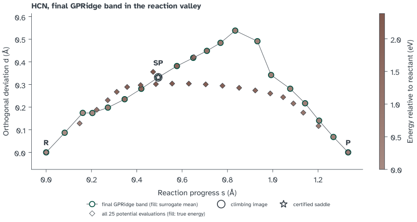
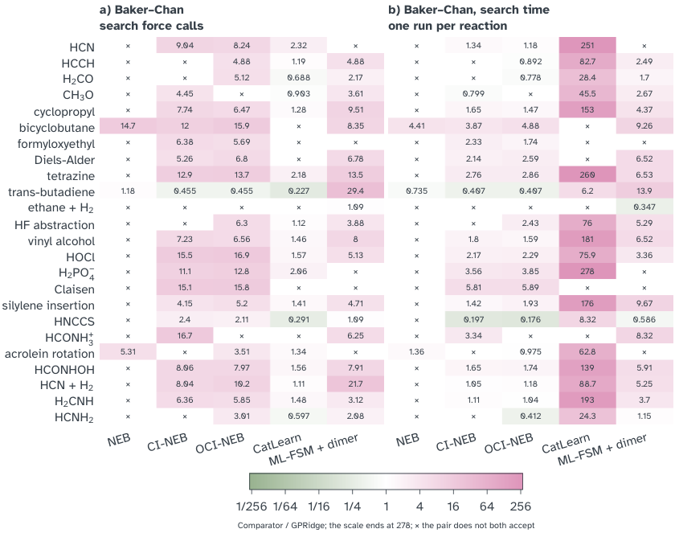
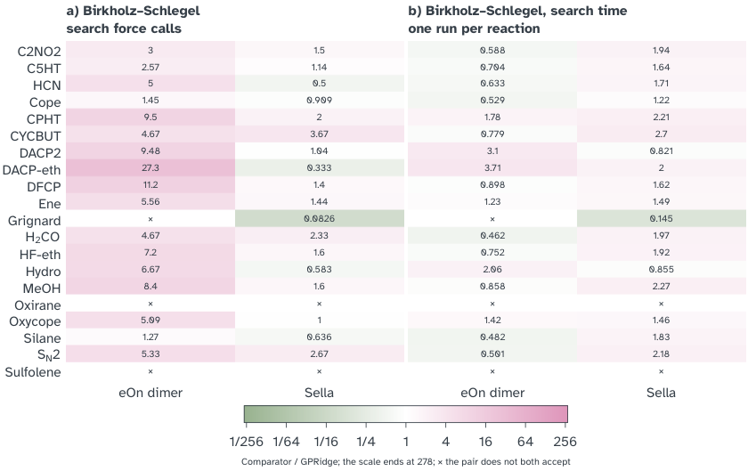

A supplementary Lean 4 development formalizes some of the paper's labelled theorems: squared-exponential kernel identities, a Schur comparison, local stability of the reflected mode, and gradient-error bounds.
Abstract
GPRidge, a Gaussian-process (GP) library for accelerating calculations of minimum energy paths and first-order saddle points with compiled-language and Python bindings, is presented. An evaluation controller uses GP predictions to iteratively adjust the Cartesian coordinates of the atoms. The fitted GP energy surface and measured energies and forces pass from the path calculation to local refinement of the saddle point. New evaluations improve the surrogate and check the candidate geometry. For the molecular calculations, acceptance requires measured-force convergence and an independent Hessian with only one negative eigenvalue. A second negative eigenvalue triggers an escape and renewed refinement. The controller supports a joint inverse-distance GP for molecules and local GP residuals on periodic systems. Applications to the 24 Baker-Chan and 20 Birkholz-Schlegel molecular reactions using the Universal Model for Atoms (UMA-S-1.1), and to 72 Pt heptamer and island rearrangements on Pt(111) using a Morse potential, are presented. On matched Baker-Chan reactions, GPRidge uses 7.8- and 7.0-fold fewer energy-and-force evaluations than climbing-image nudged elastic band (CI-NEB) and off-path climbing-image nudged elastic band (OCI-NEB), respectively, reducing validation-inclusive CI-NEB time by 41%. All 20 Birkholz-Schlegel saddle points pass the independent index-one check, compared with 17 for the classical dimer method started from the same path maxima; on those 17 reactions, the GP dimer stage uses 6.4-fold fewer evaluations. All 72 Pt(111) paths meet the OptBench force criterion, with median evaluation counts of 30 and 23 for the heptamer and island problems, against 778 and 443 for CI-NEB.
Problem
Finding minimum energy paths and first-order saddle points with nudged elastic band and dimer methods needs many expensive energy-and-force evaluations. A force criterion alone also cannot confirm that a converged point is a true index-one saddle.
Approach
GPRidge is a Gaussian-process surrogate library with Python, C and Fortran interfaces. It shares one training set between a climbing-image band and a dimer refinement. Candidate saddles are accepted only on measured-force convergence plus an independent Hessian with exactly one negative eigenvalue. Supporting theorems are partly checked in a Lean 4 development: scalar kernel identities, a Schur comparison, mode stability, a BMA variance inequality and gradient error at surrogate critical points.

Figure 32: HCN isomerization: projected observations. Plane of reaction progress and orthogonal deviation, both RMSD-based and given in Å. Circles are the final band images, filled by their surrogate mean; diamonds are all potential evaluations, filled by their measured energy. Both use the colorbar scale relative to the reactant. The ring marks the climbing image and the star the saddle that pass
Results
All 24 Baker–Chan and 20 Birkholz–Schlegel reactions reach validated index-one saddles. On matched Baker–Chan reactions GPRidge uses about 7.8-fold fewer evaluations than CI-NEB. On Pt(111) the median evaluation count drops from 778 to 30 for the heptamer and from 443 to 23 for the island problems.

Figure 22: Baker–Chan costs by reaction. Values are comparator/GPRidge search costs: (a) energy and force evaluations and (b) elapsed search time. Values above one favour GPRidge; crosses denote outcomes that fail the common checks. All 24 GPRidge reactions pass. Validation is excluded, while endpoint evaluations and ML-FSM string construction are included. Plain NEB has no saddle-refinement stage

Figure 23: Birkholz–Schlegel costs by reaction, using the same ratio and cross conventions as Figure 22 . All 20 GPRidge reactions pass. The comparison excludes shared band preparation and independent validation. Each method starts from the band maximum, and GPRidge also reuses the band’s measured observations. Sella uses fewer evaluations on six common successes; the crosses show its unsuccessful